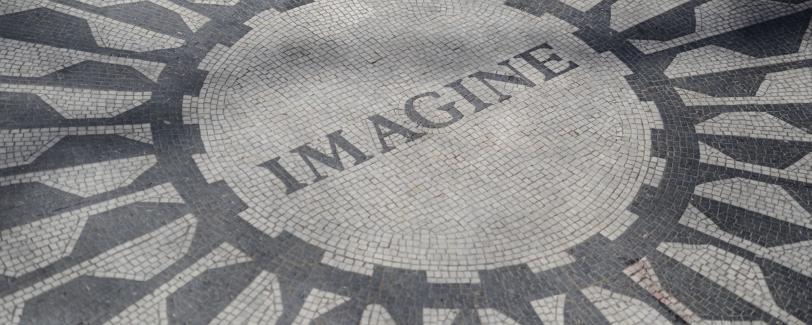

The Gilded Age & Literary and Architectural Landmarks Tour
Experience New York’s opulent past along Fifth Avenue. Step into the world chronicled in the HBO series The Gilded Age, as well as Edith Wharton in The Age of Innocence and Henry James’ Washington Square.
We begin our journey in the historic heart of Washington Square—home turf for Wharton, James, Emma Lazarus, and Mark Twain. From there, we trace how (by 1890) the city’s elite kept migrating north along Fifth Avenue: leaving behind storied mansions (many now demolished), building new legacies in Midtown, and then settling along Central Park’s east side.
At a Glance
Length: ~2 hours
Easy pace, lots of stops.
Neighborhoods: Fifth Ave / Midtown
Architecture + society stories.
Focus: Mansions, money, power
What’s left, what changed.
Best for: Photo lovers
Big facades, great angles.
Tour Overview
- Literary beginnings: Stroll through Washington Square, immerse yourself in Wharton and James settings, and see how the neighborhood transformed over time.
- Beaux-Arts grandeur: Head to Midtown to admire Gilded Age public monuments—grand palaces for the people inspired by the City Beautiful movement, dedicated to transportation and learning.
- Fifth Avenue’s opulence: Walk the Fifth Avenue Historic District (roughly 58th to 79th Streets), see surviving townhouses and mansions, and learn the fate of those that vanished.
- Central Park’s grand promenade: Stroll the only formal path in Central Park—once reserved for parading carriages, fine horses, and the city’s best-appointed residents.
Along the way we explore men’s clubs, authors who shaped America’s self-image, and the mansions of scions of industry—names like Duke, Astor, Pulitzer, Frick, and Harkness—plus architects Richard Morris Hunt, Carrère & Hastings, and Stanford White.
We also look at the era’s contradictions: extreme wealth beside reform; the Progressive Era’s noblesse oblige; and how Irish Catholics and Jews asserted themselves into Gilded Age self-respect and achievement. We’ll connect it back to today—because you could argue we’re living through a new international Gilded Age right now.
Exclusive access (when possible): Depending on circumstances, there may be a chance to step inside up to three authentic Gilded Age interiors. Access is never guaranteed and depends on relationships with building staff, but your guide will do his utmost to make it happen. Some interiors may request an optional donation.
Tour Highlights
- Explore iconic literary and historic sites
- See grand Beaux-Arts monuments and discover their stories
- Walk past—and possibly enter a few—Gilded Age mansions along Fifth Avenue
- Learn the social aspirations and contradictions of the Gilded Age
- Experience New York’s one-time formal carriage path in Central Park
Additional Information
Duration: 4 hours (can be shortened to three or two hours)
Meeting point: Provided upon booking
Language: English
The tour involves miles of walking, with a few opportunities for sitting and restrooms. If you prefer, this can also be done with your private driver. Jared can help you find a great one for us.
Tour ends near several museums preserved as Gilded Age time capsules. Please note: museum visits require separate admission and are not included in the tour.
Want a sense of what the experience is like? Read Jared’s 5-star reviews on the Reviews Page.
Why tour with Jared?
Jared Goldstein is a licensed NYC sightseeing guide who builds private, customized walking tours that blend big-picture history with the small details that make a neighborhood feel alive. If you want to go deeper (or keep it lighter), he’ll tailor the pacing, route, and themes to your group.
The Gilded Age Tour

